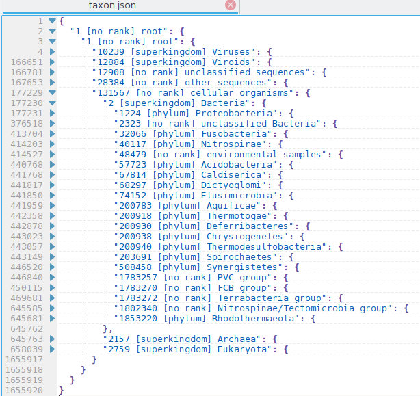

Usage and Examples
Table of Contents
Before use
Please download and uncompress these files:
And copy "names.dmp", "nodes.dmp", "delnodes.dmp" and "merged.dmp" to data directory: "$HOME/.taxonkit".
taxonkit
TaxonKit - A Cross-platform and Efficient NCBI Taxonomy Toolkit
Version: 0.5.0
Author: Wei Shen <shenwei356@gmail.com>
Source code: https://github.com/shenwei356/taxonkit
Documents : https://bioinf.shenwei.me/taxonkit
Dataset:
Please download and decompress "taxdump.tar.gz":
ftp://ftp.ncbi.nih.gov/pub/taxonomy/taxdump.tar.gz
and copy "names.dmp", "nodes.dmp", "delnodes.dmp" and "merged.dmp" to data directory:
"/home/shenwei/.taxonkit"
or some other directory, and later you can refer to using flag --data-dir,
or environment variable TAXONKIT_DB
Usage:
taxonkit [command]
Available Commands:
genautocomplete generate shell autocompletion script
help Help about any command
lineage query lineage of given taxids
list list taxon tree of given taxids
name2taxid query taxid by taxon scientific name
reformat reformat lineage
taxid-changelog create taxid changelog from dump archives
version print version information and check for update
Flags:
--data-dir string directory containing nodes.dmp and names.dmp (default "/home/shenwei/.taxonkit")
-h, --help help for taxonkit
--line-buffered use line buffering on output, i.e., immediately writing to stdin/file for every line of output
-o, --out-file string out file ("-" for stdout, suffix .gz for gzipped out) (default "-")
-j, --threads int number of CPUs. 2 is enough (default value: 1 for single-CPU PC, 2 for others) (default 2)
--verbose print verbose information
Use "taxonkit [command] --help" for more information about a command
list
Usage
list taxon tree of given taxids
Usage:
taxonkit list [flags]
Flags:
--ids string taxid(s), multiple values should be separated by comma
--indent string indent (default " ")
--json output in JSON format. you can save the result in file with suffix ".json" and open with modern text editor
-n, --show-name output scientific name
-r, --show-rank output rank
Examples
-
Default usage
:::sh $ taxonkit list --ids 9605,239934 9605 9606 63221 741158 1425170 239934 239935 349741 512293 512294 1131822 1262691 1263034 1131336 1574264 1574265 1638783 1679444 1755639 1896967 -
Removing indent. The list could be used to extract sequences from BLAST database with
blastdbcmd(see tutorial)$ taxonkit list --ids 9605,239934 --indent "" 9605 9606 63221 741158 1425170 239934 239935 349741 512293 512294 1131822 1262691 1263034 1131336 1574264 1574265 1638783 1679444 1755639 1896967Performance: Time and memory usage for whole taxon tree:
$ # emptying the buffers cache $ su -c "free && sync && echo 3 > /proc/sys/vm/drop_caches && free" $ memusg -t taxonkit list --ids 1 --indent "" --verbose > t0.txt 13:52:58.905 [INFO] parsing nodes file: /home/shenwei/.taxonkit/nodes.dmp 13:53:01.449 [INFO] 2121511 nodes parsed elapsed time: 4.088s peak rss: 441.95 MB -
Adding names
$ taxonkit list --show-rank --show-name --indent " " --ids 9605,239934 9605 [genus] Homo 9606 [species] Homo sapiens 63221 [subspecies] Homo sapiens neanderthalensis 741158 [subspecies] Homo sapiens subsp. 'Denisova' 1425170 [species] Homo heidelbergensis 239934 [genus] Akkermansia 239935 [species] Akkermansia muciniphila 349741 [no rank] Akkermansia muciniphila ATCC BAA-835 512293 [no rank] environmental samples 512294 [species] uncultured Akkermansia sp. 1131822 [species] uncultured Akkermansia sp. SMG25 1262691 [species] Akkermansia sp. CAG:344 1263034 [species] Akkermansia muciniphila CAG:154 1131336 [species] Akkermansia sp. KLE1605 1574264 [species] Akkermansia sp. KLE1797 1574265 [species] Akkermansia sp. KLE1798 1638783 [species] Akkermansia sp. UNK.MGS-1 1679444 [species] Akkermansia glycaniphila 1755639 [species] Akkermansia sp. MC_55 1872421 [species] Akkermansia sp. 1896967 [species] Akkermansia sp. 54_46 1929996 [species] Akkermansia sp. Phil8 1945963 [species] Akkermansia sp. UBA3271 1945964 [species] Akkermansia sp. UBA5128 1945965 [species] Akkermansia sp. UBA7059 1945966 [species] Akkermansia sp. UBA7090 2478952 [species] Akkermansia sp. aa_0143Performance: Time and memory usage for whole taxon tree:
$ # emptying the buffers cache $ su -c "free && sync && echo 3 > /proc/sys/vm/drop_caches && free" $ memusg -t taxonkit list --show-rank --show-name --ids 1 > t1.txt elapsed time: 8.785s peak rss: 1.17 GB -
Output in JSON format, so you can easily collapse and uncollapse taxonomy tree in modern text editor.
$ taxonkit list --show-rank --show-name --indent " " --ids 9605,239934 --json { "9605 [genus] Homo": { "9606 [species] Homo sapiens": { "63221 [subspecies] Homo sapiens neanderthalensis": { }, "741158 [subspecies] Homo sapiens subsp. 'Denisova'": { } } "1425170 [species] Homo heidelbergensis": { } }, "239934 [genus] Akkermansia": { "239935 [species] Akkermansia muciniphila": { "349741 [no rank] Akkermansia muciniphila ATCC BAA-835": { } } "512293 [no rank] environmental samples": { "512294 [species] uncultured Akkermansia sp.": { }, "1131822 [species] uncultured Akkermansia sp. SMG25": { }, "1262691 [species] Akkermansia sp. CAG:344": { }, "1263034 [species] Akkermansia muciniphila CAG:154": { } } "1131336 [species] Akkermansia sp. KLE1605": { } "1574264 [species] Akkermansia sp. KLE1797": { } "1574265 [species] Akkermansia sp. KLE1798": { } "1638783 [species] Akkermansia sp. UNK.MGS-1": { } "1679444 [species] Akkermansia glycaniphila": { } "1755639 [species] Akkermansia sp. MC_55": { } "1872421 [species] Akkermansia sp.": { } "1896967 [species] Akkermansia sp. 54_46": { } "1929996 [species] Akkermansia sp. Phil8": { } "1945963 [species] Akkermansia sp. UBA3271": { } "1945964 [species] Akkermansia sp. UBA5128": { } "1945965 [species] Akkermansia sp. UBA7059": { } "1945966 [species] Akkermansia sp. UBA7090": { } "2478952 [species] Akkermansia sp. aa_0143": { } } }Snapshot of taxonomy (taxid 1) in kate: 
lineage
Usage
query lineage of given taxids
Input:
- List of taxids, one taxid per line.
- Or tab-delimited format, please specify taxid field with flag -i/--taxid-field.
- Supporting (gzipped) file or STDIN.
Output:
0. Input line.
1. Status code (optional with flag -c/--show-status-code)
- "-1" for queries not found in whole database.
- "0" for deleted taxids, provided by "delnodes.dmp".
- New taxids for merged taxids, provided by "merged.dmp".
- Taxids for these found in "nodes.dmp".
2. Lineage, delimiter can be changed with flag -d/--delimiter.
3. Lineage taxids (optional with flag -t/--show-lineage-taxids)
4. Rank (optional with flag -r/--show-rank)
Usage:
taxonkit lineage [flags]
Flags:
-d, --delimiter string field delimiter in lineage (default ";")
-h, --help help for lineage
-t, --show-lineage-taxids appending lineage consisting of taxids
-r, --show-rank appending rank of taxids
-c, --show-status-code show status code between lineage
-i, --taxid-field int field index of taxid. data should be tab-separated (default 1)
Examples
-
Full lineage:
# note that 123124124 is a fake taxid, 3 was deleted, 92489,1458427 were merged $ cat taxids.txt 9606 9913 376619 349741 239935 314101 11932 1327037 123124124 3 92489 1458427 $ taxonkit lineage taxids.txt | tee lineage.txt 14:27:14.600 [WARN] taxid 92489 was merged into 796334 14:27:14.600 [WARN] taxid 1458427 was merged into 1458425 14:27:14.600 [WARN] taxid 123124124 not found 14:27:14.600 [WARN] taxid 3 was deleted 9606 cellular organisms;Eukaryota;Opisthokonta;Metazoa;Eumetazoa;Bilateria;Deuterostomia;Chordata;Craniata;Vertebrata;Gnathostomata;Teleostomi;Euteleostomi;Sarcopterygii;Dipnotetrapodomorpha;Tetrapoda;Amniota;Mammalia;Theria;Eutheria;Boreoeutheria;Euarchontoglires;Primates;Haplorrhini;Simiiformes;Catarrhini;Hominoidea;Hominidae;Homininae;Homo;Homo sapiens 9913 cellular organisms;Eukaryota;Opisthokonta;Metazoa;Eumetazoa;Bilateria;Deuterostomia;Chordata;Craniata;Vertebrata;Gnathostomata;Teleostomi;Euteleostomi;Sarcopterygii;Dipnotetrapodomorpha;Tetrapoda;Amniota;Mammalia;Theria;Eutheria;Boreoeutheria;Laurasiatheria;Cetartiodactyla;Ruminantia;Pecora;Bovidae;Bovinae;Bos;Bos taurus 376619 cellular organisms;Bacteria;Proteobacteria;Gammaproteobacteria;Thiotrichales;Francisellaceae;Francisella;Francisella tularensis;Francisella tularensis subsp. holarctica;Francisella tularensis subsp. holarctica LVS 349741 cellular organisms;Bacteria;PVC group;Verrucomicrobia;Verrucomicrobiae;Verrucomicrobiales;Akkermansiaceae;Akkermansia;Akkermansia muciniphila;Akkermansia muciniphila ATCC BAA-835 239935 cellular organisms;Bacteria;PVC group;Verrucomicrobia;Verrucomicrobiae;Verrucomicrobiales;Akkermansiaceae;Akkermansia;Akkermansia muciniphila 314101 cellular organisms;Bacteria;environmental samples;uncultured murine large bowel bacterium BAC 54B 11932 Viruses;Ortervirales;Retroviridae;unclassified Retroviridae;Intracisternal A-particles;Mouse Intracisternal A-particle 1327037 Viruses;Caudovirales;Siphoviridae;unclassified Siphoviridae;Croceibacter phage P2559Y 123124124 3 92489 cellular organisms;Bacteria;Proteobacteria;Gammaproteobacteria;Enterobacterales;Erwiniaceae;Erwinia;Erwinia oleae 1458427 cellular organisms;Bacteria;Proteobacteria;Betaproteobacteria;Burkholderiales;Comamonadaceae;Serpentinomonas;Serpentinomonas raichei -
Check deleted or merged taxids
$ taxonkit lineage --show-status-code taxids.txt | tee lineage.withcode.txt # valid $ cat lineage.withcode.txt | awk '$2 > 0' | cut -f 1,2 9606 9606 9913 9913 376619 376619 349741 349741 239935 239935 314101 314101 11932 11932 1327037 1327037 92489 796334 1458427 1458425 # merged $ cat lineage.withcode.txt | awk '$2 > 0 && $2 != $1' | cut -f 1,2 # deleted cat lineage.withcode.txt | awk '$2 == 0' | cut -f 1 3 # invalid cat lineage.withcode.txt | awk '$2 < 0' | cut -f 1 123124124 -
Filter out invalid and deleted taxids, and *replace old taxids with new ones", you may install [csvtk](https://github.com/shenwei356/csvtk.
# input is one-column-taxid $ taxonkit lineage -c taxids.txt \ | awk '$2>0' \ | cut -f 2- # taxids are in `$n`th field in a 4-columns tab-delimited file $ cat input.txt \ | taxonkit lineage -c -i 3 \ | csvtk filter2 -H -t -f '$5>0' \ | csvtk -H -t cut -f -3 -
Show rank
$ taxonkit lineage -r taxids.txt | cut -f 1,3 9606 species 9913 species 376619 no rank 349741 no rank 239935 species 314101 species 11932 species 1327037 species 123124124 3 92489 species 1458427 species -
Show lineage consisting of taxids:
$ taxonkit lineage -t taxids.txt 9606 cellular organisms;Eukaryota;Opisthokonta;Metazoa;Eumetazoa;Bilateria;Deuterostomia;Chordata;Craniata;Vertebrata;Gnathostomata;Teleostomi;Euteleostomi;Sarcopterygii;Dipnotetrapodomorpha;Tetrapoda;Amniota;Mammalia;Theria;Eutheria;Boreoeutheria;Euarchontoglires;Primates;Haplorrhini;Simiiformes;Catarrhini;Hominoidea;Hominidae;Homininae;Homo;Homo sapiens 131567;2759;33154;33208;6072;33213;33511;7711;89593;7742;7776;117570;117571;8287;1338369;32523;32524;40674;32525;9347;1437010;314146;9443;376913;314293;9526;314295;9604;207598;9605;9606 9913 cellular organisms;Eukaryota;Opisthokonta;Metazoa;Eumetazoa;Bilateria;Deuterostomia;Chordata;Craniata;Vertebrata;Gnathostomata;Teleostomi;Euteleostomi;Sarcopterygii;Dipnotetrapodomorpha;Tetrapoda;Amniota;Mammalia;Theria;Eutheria;Boreoeutheria;Laurasiatheria;Cetartiodactyla;Ruminantia;Pecora;Bovidae;Bovinae;Bos;Bos taurus 131567;2759;33154;33208;6072;33213;33511;7711;89593;7742;7776;117570;117571;8287;1338369;32523;32524;40674;32525;9347;1437010;314145;91561;9845;35500;9895;27592;9903;9913 376619 cellular organisms;Bacteria;Proteobacteria;Gammaproteobacteria;Thiotrichales;Francisellaceae;Francisella;Francisella tularensis;Francisella tularensis subsp. holarctica;Francisella tularensis subsp. holarctica LVS 131567;2;1224;1236;72273;34064;262;263;119857;376619 349741 cellular organisms;Bacteria;PVC group;Verrucomicrobia;Verrucomicrobiae;Verrucomicrobiales;Akkermansiaceae;Akkermansia;Akkermansia muciniphila;Akkermansia muciniphila ATCC BAA-835 131567;2;1783257;74201;203494;48461;1647988;239934;239935;349741 239935 cellular organisms;Bacteria;PVC group;Verrucomicrobia;Verrucomicrobiae;Verrucomicrobiales;Akkermansiaceae;Akkermansia;Akkermansia muciniphila 131567;2;1783257;74201;203494;48461;1647988;239934;239935 314101 cellular organisms;Bacteria;environmental samples;uncultured murine large bowel bacterium BAC 54B 131567;2;48479;314101 11932 Viruses;Ortervirales;Retroviridae;unclassified Retroviridae;Intracisternal A-particles;Mouse Intracisternal A-particle 10239;2169561;11632;35276;11749;11932 1327037 Viruses;Caudovirales;Siphoviridae;unclassified Siphoviridae;Croceibacter phage P2559Y 10239;28883;10699;196894;1327037 123124124 3 92489 cellular organisms;Bacteria;Proteobacteria;Gammaproteobacteria;Enterobacterales;Erwiniaceae;Erwinia;Erwinia oleae 131567;2;1224;1236;91347;1903409;551;796334 1458427 cellular organisms;Bacteria;Proteobacteria;Betaproteobacteria;Burkholderiales;Comamonadaceae;Serpentinomonas;Serpentinomonas raichei 131567;2;1224;28216;80840;80864;2490452;1458425or read taxids from STDIN:
$ cat taxids.txt | taxonkit lineage
reformat
Usage
reformat lineage
Output format can be formated by flag --format, available placeholders:
{k}: superkingdom
{p}: phylum
{c}: class
{o}: order
{f}: family
{g}: genus
{s}: species
{S}: subspecies
Output format can contains some escape charactors like "\t".
This command appends reformated lineage to the input line.
The corresponding taxids of reformated lineage can be provided as another
column by flag "-t/--show-lineage-taxids".
Usage:
taxonkit reformat [flags]
Flags:
-d, --delimiter string field delimiter in input lineage (default ";")
-F, --fill-miss-rank fill missing rank with original lineage information (experimental)
-f, --format string output format, placeholders of rank are needed (default "{k};{p};{c};{o};{f};{g};{s}")
-h, --help help for reformat
-i, --lineage-field int field index of lineage. data should be tab-separated (default 2)
-r, --miss-rank-repl string replacement string for missing rank, if given "", "unclassified xxx xxx" will used, where "unclassified " is settable by flag -p/--miss-rank-repl-prefix
-p, --miss-rank-repl-prefix string prefix for estimated taxon level (default "unclassified ")
-R, --miss-taxid-repl string replacement string for missing taxid
-t, --show-lineage-taxids show corresponding taxids of reformated lineage
Examples:
-
Example lineage (produced by:
taxonkit lineage taxids.txt | awk '$2!=""' > lineage.txt)$ cat lineage.txt 9606 cellular organisms;Eukaryota;Opisthokonta;Metazoa;Eumetazoa;Bilateria;Deuterostomia;Chordata;Craniata;Vertebrata;Gnathostomata;Teleostomi;Euteleostomi;Sarcopterygii;Dipnotetrapodomorpha;Tetrapoda;Amniota;Mammalia;Theria;Eutheria;Boreoeutheria;Euarchontoglires;Primates;Haplorrhini;Simiiformes;Catarrhini;Hominoidea;Hominidae;Homininae;Homo;Homo sapiens 9913 cellular organisms;Eukaryota;Opisthokonta;Metazoa;Eumetazoa;Bilateria;Deuterostomia;Chordata;Craniata;Vertebrata;Gnathostomata;Teleostomi;Euteleostomi;Sarcopterygii;Dipnotetrapodomorpha;Tetrapoda;Amniota;Mammalia;Theria;Eutheria;Boreoeutheria;Laurasiatheria;Cetartiodactyla;Ruminantia;Pecora;Bovidae;Bovinae;Bos;Bos taurus 376619 cellular organisms;Bacteria;Proteobacteria;Gammaproteobacteria;Thiotrichales;Francisellaceae;Francisella;Francisella tularensis;Francisella tularensis subsp. holarctica;Francisella tularensis subsp. holarctica LVS 349741 cellular organisms;Bacteria;PVC group;Verrucomicrobia;Verrucomicrobiae;Verrucomicrobiales;Akkermansiaceae;Akkermansia;Akkermansia muciniphila;Akkermansia muciniphila ATCC BAA-835 239935 cellular organisms;Bacteria;PVC group;Verrucomicrobia;Verrucomicrobiae;Verrucomicrobiales;Akkermansiaceae;Akkermansia;Akkermansia muciniphila 314101 cellular organisms;Bacteria;environmental samples;uncultured murine large bowel bacterium BAC 54B 11932 Viruses;Ortervirales;Retroviridae;unclassified Retroviridae;Intracisternal A-particles;Mouse Intracisternal A-particle 1327037 Viruses;Caudovirales;Siphoviridae;unclassified Siphoviridae;Croceibacter phage P2559Y 92489 cellular organisms;Bacteria;Proteobacteria;Gammaproteobacteria;Enterobacterales;Erwiniaceae;Erwinia;Erwinia oleae 1458427 cellular organisms;Bacteria;Proteobacteria;Betaproteobacteria;Burkholderiales;Comamonadaceae;Serpentinomonas;Serpentinomonas raichei -
Default output format (
"{k};{p};{c};{o};{f};{g};{s}")# reformated lineages are appended to the input data $ taxonkit reformat lineage.txt ... 239935 cellular organisms;Bacteria;PVC group;Verrucomicrobia;Verrucomicrobiae;Verrucomicrobiales;Akkermansiaceae;Akkermansia;Akkermansia muciniphila Bacteria;Verrucomicrobia;Verrucomicrobiae;Verrucomicrobiales;Akkermansiaceae;Akkermansia;Akkermansia muciniphila ... $ taxonkit reformat lineage.txt | tee lineage.txt.reformat $ cut -f 1,3 lineage.txt.reformat 9606 Eukaryota;Chordata;Mammalia;Primates;Hominidae;Homo;Homo sapiens 9913 Eukaryota;Chordata;Mammalia;;Bovidae;Bos;Bos taurus 376619 Bacteria;Proteobacteria;Gammaproteobacteria;Thiotrichales;Francisellaceae;Francisella;Francisella tularensis 349741 Bacteria;Verrucomicrobia;Verrucomicrobiae;Verrucomicrobiales;Akkermansiaceae;Akkermansia;Akkermansia muciniphila 239935 Bacteria;Verrucomicrobia;Verrucomicrobiae;Verrucomicrobiales;Akkermansiaceae;Akkermansia;Akkermansia muciniphila 314101 Bacteria;;;;;;uncultured murine large bowel bacterium BAC 54B 11932 Viruses;;;Ortervirales;Retroviridae;Intracisternal A-particles;Mouse Intracisternal A-particle 1327037 Viruses;;;Caudovirales;Siphoviridae;;Croceibacter phage P2559Y # aligned $ cat lineage.txt \ | taxonkit reformat \ | cut -f 1,3 \ | sed -r 's/;/\t/g' \ | csvtk add-header -t -n taxid,kindom,phylum,class,order,family,genus,species \ | csvtk pretty -t taxid kindom phylum class order family genus species 9606 Eukaryota Chordata Mammalia Primates Hominidae Homo Homo sapiens 9913 Eukaryota Chordata Mammalia Bovidae Bos Bos taurus 376619 Bacteria Proteobacteria Gammaproteobacteria Thiotrichales Francisellaceae Francisella Francisella tularensis 349741 Bacteria Verrucomicrobia Verrucomicrobiae Verrucomicrobiales Akkermansiaceae Akkermansia Akkermansia muciniphila 239935 Bacteria Verrucomicrobia Verrucomicrobiae Verrucomicrobiales Akkermansiaceae Akkermansia Akkermansia muciniphila 314101 Bacteria uncultured murine large bowel bacterium BAC 54B 11932 Viruses Ortervirales Retroviridae Intracisternal A-particles Mouse Intracisternal A-particle 1327037 Viruses Caudovirales Siphoviridae Croceibacter phage P2559Y -
Show corresponding taxids of reformated lineage (flag
-t/--show-lineage-taxids)$ cat lineage.txt \ | taxonkit reformat -t \ | cut -f 1,4 \ | sed -r 's/;/\t/g' \ | csvtk add-header -t -n taxid,kindom,phylum,class,order,family,genus,species \ | csvtk pretty -t taxid kindom phylum class order family genus species 9606 2759 7711 40674 9443 9604 9605 9606 9913 2759 7711 40674 9895 9903 9913 376619 2 1224 1236 72273 34064 262 263 349741 2 74201 203494 48461 1647988 239934 239935 239935 2 74201 203494 48461 1647988 239934 239935 314101 2 314101 11932 10239 2169561 11632 11749 11932 1327037 10239 28883 10699 1327037 92489 2 1224 1236 91347 1903409 551 796334 1458427 2 1224 28216 80840 80864 2490452 1458425 -
Use custom strings for unclassfied ranks
$ taxonkit reformat lineage.txt --miss-rank-repl "__" | cut -f 3 Eukaryota;Chordata;Mammalia;Primates;Hominidae;Homo;Homo sapiens Eukaryota;Chordata;Mammalia;__;Bovidae;Bos;Bos taurus Bacteria;Proteobacteria;Gammaproteobacteria;Thiotrichales;Francisellaceae;Francisella;Francisella tularensis Bacteria;Verrucomicrobia;Verrucomicrobiae;Verrucomicrobiales;Akkermansiaceae;Akkermansia;Akkermansia muciniphila Bacteria;Verrucomicrobia;Verrucomicrobiae;Verrucomicrobiales;Akkermansiaceae;Akkermansia;Akkermansia muciniphila Bacteria;__;__;__;__;__;uncultured murine large bowel bacterium BAC 54B Viruses;__;__;Ortervirales;Retroviridae;Intracisternal A-particles;Mouse Intracisternal A-particle Viruses;__;__;Caudovirales;Siphoviridae;__;Croceibacter phage P2559Y Bacteria;Proteobacteria;Gammaproteobacteria;Enterobacterales;Erwiniaceae;Erwinia;Erwinia oleae Bacteria;Proteobacteria;Betaproteobacteria;Burkholderiales;Comamonadaceae;Serpentinomonas;Serpentinomonas raichei -
Estimate and fill missing rank with original lineage information (experimental, very useful for formating input data for LEfSe). You can change the prefix "unclassified" using flag
-p/--miss-rank-repl-prefix.$ cat lineage.txt \ | taxonkit reformat -F \ | cut -f 1,3 \ | sed -r 's/;/\t/g' \ | csvtk add-header -t -n taxid,kindom,phylum,class,order,family,genus,species \ | csvtk pretty -t taxid kindom phylum class order family genus species 9606 Eukaryota Chordata Mammalia Primates Hominidae Homo Homo sapiens 9913 Eukaryota Chordata Mammalia unclassified Mammalia order Bovidae Bos Bos taurus 376619 Bacteria Proteobacteria Gammaproteobacteria Thiotrichales Francisellaceae Francisella Francisella tularensis 349741 Bacteria Verrucomicrobia Verrucomicrobiae Verrucomicrobiales Akkermansiaceae Akkermansia Akkermansia muciniphila 239935 Bacteria Verrucomicrobia Verrucomicrobiae Verrucomicrobiales Akkermansiaceae Akkermansia Akkermansia muciniphila 314101 Bacteria unclassified Bacteria phylum unclassified Bacteria class unclassified Bacteria order unclassified Bacteria family unclassified Bacteria genus uncultured murine large bowel bacterium BAC 54B 11932 Viruses unclassified Viruses phylum unclassified Viruses class Ortervirales Retroviridae Intracisternal A-particles Mouse Intracisternal A-particle 1327037 Viruses unclassified Viruses phylum unclassified Viruses class Caudovirales Siphoviridae unclassified Siphoviridae genus Croceibacter phage P2559Y 92489 Bacteria Proteobacteria Gammaproteobacteria Enterobacterales Erwiniaceae Erwinia Erwinia oleae 1458427 Bacteria Proteobacteria Betaproteobacteria Burkholderiales Comamonadaceae Serpentinomonas Serpentinomonas raichei -
Support tab in format string
$ echo 9606 | taxonkit lineage | taxonkit reformat -f "{k}\t{p}\t{c}\t{o}\t{f}\t{g}\t{s}\t{S}" | csvtk cut -t -f -2 9606 Eukaryota Chordata Mammalia Primates Hominidae Homo Homo sapiens -
From taxid to 7-ranks lineage:
$ cat taxids.txt | taxonkit lineage | taxonkit reformat
name2taxid
Usage
query taxid by taxon scientific name
Usage:
taxonkit name2taxid [flags]
Flags:
-h, --help help for name2taxid
-i, --name-field int field index of name. data should be tab-separated (default 1)
-r, --show-rank show rank
Examples
Example data
$ cat names.txt
Homo sapiens
Akkermansia muciniphila ATCC BAA-835
Akkermansia muciniphila
Mouse Intracisternal A-particle
Wei Shen
uncultured murine large bowel bacterium BAC 54B
Croceibacter phage P2559Y
-
default
# taxonkit name2taxid names.txt $ cat names.txt | taxonkit name2taxid | csvtk pretty -t Homo sapiens 9606 Akkermansia muciniphila ATCC BAA-835 349741 Akkermansia muciniphila 239935 Mouse Intracisternal A-particle 11932 Wei Shen uncultured murine large bowel bacterium BAC 54B 314101 Croceibacter phage P2559Y 1327037 -
show rank
$ cat names.txt | taxonkit name2taxid --show-rank | csvtk pretty -t Homo sapiens 9606 Akkermansia muciniphila ATCC BAA-835 349741 Akkermansia muciniphila 239935 Mouse Intracisternal A-particle 11932 Wei Shen uncultured murine large bowel bacterium BAC 54B 314101 Croceibacter phage P2559Y 1327037 -
from name to lineage
$ cat names.txt | taxonkit name2taxid | taxonkit lineage --taxid-field 2 Homo sapiens 9606 cellular organisms;Eukaryota;Opisthokonta;Metazoa;Eumetazoa;Bilateria;Deuterostomia;Chordata;Craniata;Vertebrata;Gnathostomata;Teleostomi;Euteleostomi;Sarcopterygii;Dipnotetrapodomorpha;Tetrapoda;Amniota;Mammalia;Theria;Eutheria;Boreoeutheria;Euarchontoglires;Primates;Haplorrhini;Simiiformes;Catarrhini;Hominoidea;Hominidae;Homininae;Homo;Homo sapiens Akkermansia muciniphila ATCC BAA-835 349741 cellular organisms;Bacteria;PVC group;Verrucomicrobia;Verrucomicrobiae;Verrucomicrobiales;Akkermansiaceae;Akkermansia;Akkermansia muciniphila;Akkermansia muciniphila ATCC BAA-835 Akkermansia muciniphila 239935 cellular organisms;Bacteria;PVC group;Verrucomicrobia;Verrucomicrobiae;Verrucomicrobiales;Akkermansiaceae;Akkermansia;Akkermansia muciniphila Mouse Intracisternal A-particle 11932 Viruses;Ortervirales;Retroviridae;unclassified Retroviridae;Intracisternal A-particles;Mouse Intracisternal A-particle Wei Shen uncultured murine large bowel bacterium BAC 54B 314101 cellular organisms;Bacteria;environmental samples;uncultured murine large bowel bacterium BAC 54B Croceibacter phage P2559Y 1327037 Viruses;Caudovirales;Siphoviridae;unclassified Siphoviridae;Croceibacter phage P2559Y
taxid-changelog
Usage
create taxid changelog from dump archives
Steps:
# dependencies:
# rush - https://github.com/shenwei356/rush/
mkdir -p archive; cd archive;
# --------- download ---------
# option 1
# for fast network connection
wget ftp://ftp.ncbi.nlm.nih.gov/pub/taxonomy/taxdump_archive/taxdmp*.zip
# option 2
# for bad network connection like mine
url=https://ftp.ncbi.nlm.nih.gov/pub/taxonomy/taxdump_archive/
wget $url -O - -o /dev/null \
| grep taxdmp | perl -ne '/(taxdmp_.+?.zip)/; print "$1\n";' \
| rush -j 2 -v url=$url 'axel -n 5 {url}/{}' \
--immediate-output -c -C download.rush
# --------- unzip ---------
ls taxdmp*.zip | rush -j 1 'unzip {} names.dmp nodes.dmp merged.dmp delnodes.dmp -d {@_(.+)\.}'
# --------- create log ---------
cd ..
taxonkit taxid-changelog -i archive -o taxid-changelog.csv.gz --verbose
Output format (CSV):
# fields comments
taxid # taxid
version # version / time of archive, e.g, 2019-07-01
change # change, values:
# NEW newly added
# REUSE_DEL deleted taxids being reused
# REUSE_MER merged taxids being reused
# DELETE deleted
# MERGE merged into another taxid
# ABSORB other taxids merged into this one
# CHANGE_NAME scientific changed
# CHANGE_RANK rank changed
# CHANGE_LIN_LIN lineage taxids remain but lineage remain
# CHANGE_LIN_TAX lineage taxids changed
# CHANGE_LIN_LEN lineage length changed
change-value # variable values for changes:
# 1) new taxid for MERGE
# 2) merged taxids for ABSORB
# 3) empty for others
name # scientific name
rank # rank
lineage # full lineage of the taxid
lineage-taxids # taxids of the lineage
# you can use csvtk to investigate them. e.g.,
csvtk grep -f taxid -p 1390515 taxid-changelog.csv.gz
Usage:
taxonkit taxid-changelog [flags]
Flags:
-i, --archive string directory containing decompressed dumped archives
-h, --help help for taxid-changelog
Example 1 (E.coli with taxid 562)
$ pigz -cd taxid-changelog.csv.gz \
| csvtk grep -f taxid -p 562 \
| csvtk pretty
taxid version change change-value name rank lineage lineage-taxids
562 2014-08-01 NEW Escherichia coli species cellular organisms;Bacteria;Proteobacteria;Gammaproteobacteria;Enterobacteriales;Enterobacteriaceae;Escherichia;Escherichia coli 131567;2;1224;1236;91347;543;561;562
562 2014-08-01 ABSORB 662101;662104 Escherichia coli species cellular organisms;Bacteria;Proteobacteria;Gammaproteobacteria;Enterobacteriales;Enterobacteriaceae;Escherichia;Escherichia coli 131567;2;1224;1236;91347;543;561;562
562 2015-11-01 ABSORB 1637691 Escherichia coli species cellular organisms;Bacteria;Proteobacteria;Gammaproteobacteria;Enterobacteriales;Enterobacteriaceae;Escherichia;Escherichia coli 131567;2;1224;1236;91347;543;561;562
562 2016-10-01 CHANGE_LIN_LIN Escherichia coli species cellular organisms;Bacteria;Proteobacteria;Gammaproteobacteria;Enterobacterales;Enterobacteriaceae;Escherichia;Escherichia coli 131567;2;1224;1236;91347;543;561;562
562 2018-06-01 ABSORB 469598 Escherichia coli species cellular organisms;Bacteria;Proteobacteria;Gammaproteobacteria;Enterobacterales;Enterobacteriaceae;Escherichia;Escherichia coli 131567;2;1224;1236;91347;543;561;562
# merged taxids
$ pigz -cd taxid-changelog.csv.gz \
| csvtk grep -f taxid -p 662101,662104,1637691,469598 \
| csvtk pretty
taxid version change change-value name rank lineage lineage-taxids
469598 2014-08-01 NEW Escherichia sp. 3_2_53FAA species cellular organisms;Bacteria;Proteobacteria;Gammaproteobacteria;Enterobacteriales;Enterobacteriaceae;Escherichia;Escherichia sp. 3_2_53FAA 131567;2;1224;1236;91347;543;561;469598
469598 2016-10-01 CHANGE_LIN_LIN Escherichia sp. 3_2_53FAA species cellular organisms;Bacteria;Proteobacteria;Gammaproteobacteria;Enterobacterales;Enterobacteriaceae;Escherichia;Escherichia sp. 3_2_53FAA 131567;2;1224;1236;91347;543;561;469598
469598 2018-06-01 MERGE 562 Escherichia sp. 3_2_53FAA species cellular organisms;Bacteria;Proteobacteria;Gammaproteobacteria;Enterobacterales;Enterobacteriaceae;Escherichia;Escherichia sp. 3_2_53FAA 131567;2;1224;1236;91347;543;561;469598
662101 2014-08-01 MERGE 562
662104 2014-08-01 MERGE 562
1637691 2015-04-01 DELETE
1637691 2015-05-01 REUSE_DEL Escherichia sp. MAR species cellular organisms;Bacteria;Proteobacteria;Gammaproteobacteria;Enterobacteriales;Enterobacteriaceae;Escherichia;Escherichia sp. MAR 131567;2;1224;1236;91347;543;561;1637691
1637691 2015-11-01 MERGE 562 Escherichia sp. MAR species cellular organisms;Bacteria;Proteobacteria;Gammaproteobacteria;Enterobacteriales;Enterobacteriaceae;Escherichia;Escherichia sp. MAR 131567;2;1224;1236;91347;543;561;1637691
Example 2 (All subspecies and strain in Akkermansia muciniphila 239935)
# species in Akkermansia
$ taxonkit list --show-rank --show-name --ids 239935
239935 [species] Akkermansia muciniphila
349741 [no rank] Akkermansia muciniphila ATCC BAA-835
# check them all
$ pigz -cd taxid-changelog.csv.gz \
| csvtk grep -f taxid -P <(taxonkit list --indent "" --ids 239935) \
| csvtk pretty
taxid version change change-value name rank lineage lineage-taxids
239935 2014-08-01 NEW Akkermansia muciniphila species cellular organisms;Bacteria;Chlamydiae/Verrucomicrobia group;Verrucomicrobia;Verrucomicrobiae;Verrucomicrobiales;Verrucomicrobiaceae;Akkermansia;Akkermansia muciniphila 131567;2;51290;74201;203494;48461;203557;239934;239935
239935 2015-05-01 CHANGE_LIN_TAX Akkermansia muciniphila species cellular organisms;Bacteria;Chlamydiae/Verrucomicrobia group;Verrucomicrobia;Verrucomicrobiae;Verrucomicrobiales;Akkermansiaceae;Akkermansia;Akkermansia muciniphila 131567;2;51290;74201;203494;48461;1647988;239934;239935
239935 2016-03-01 CHANGE_LIN_TAX Akkermansia muciniphila species cellular organisms;Bacteria;PVC group;Verrucomicrobia;Verrucomicrobiae;Verrucomicrobiales;Akkermansiaceae;Akkermansia;Akkermansia muciniphila 131567;2;1783257;74201;203494;48461;1647988;239934;239935
239935 2016-05-01 ABSORB 1834199 Akkermansia muciniphila species cellular organisms;Bacteria;PVC group;Verrucomicrobia;Verrucomicrobiae;Verrucomicrobiales;Akkermansiaceae;Akkermansia;Akkermansia muciniphila 131567;2;1783257;74201;203494;48461;1647988;239934;239935
349741 2014-08-01 NEW Akkermansia muciniphila ATCC BAA-835 no rank cellular organisms;Bacteria;Chlamydiae/Verrucomicrobia group;Verrucomicrobia;Verrucomicrobiae;Verrucomicrobiales;Verrucomicrobiaceae;Akkermansia;Akkermansia muciniphila;Akkermansia muciniphila ATCC BAA-835 131567;2;51290;74201;203494;48461;203557;239934;239935;349741
349741 2015-05-01 CHANGE_LIN_TAX Akkermansia muciniphila ATCC BAA-835 no rank cellular organisms;Bacteria;Chlamydiae/Verrucomicrobia group;Verrucomicrobia;Verrucomicrobiae;Verrucomicrobiales;Akkermansiaceae;Akkermansia;Akkermansia muciniphila;Akkermansia muciniphila ATCC BAA-835 131567;2;51290;74201;203494;48461;1647988;239934;239935;349741
349741 2016-03-01 CHANGE_LIN_TAX Akkermansia muciniphila ATCC BAA-835 no rank cellular organisms;Bacteria;PVC group;Verrucomicrobia;Verrucomicrobiae;Verrucomicrobiales;Akkermansiaceae;Akkermansia;Akkermansia muciniphila;Akkermansia muciniphila ATCC BAA-835 131567;2;1783257;74201;203494;48461;1647988;239934;239935;349741
genautocomplete
Usage
generate shell autocompletion script
Note: The current version supports Bash only.
This should work for *nix systems with Bash installed.
Howto:
1. run: taxonkit genautocomplete
2. create and edit ~/.bash_completion file if you don't have it.
nano ~/.bash_completion
add the following:
for bcfile in ~/.bash_completion.d/* ; do
. $bcfile
done
Usage:
taxonkit genautocomplete [flags]
Flags:
--file string autocompletion file (default "/home/shenwei/.bash_completion.d/taxonkit.sh")
-h, --help help for genautocomplete
--type string autocompletion type (currently only bash supported) (default "bash")